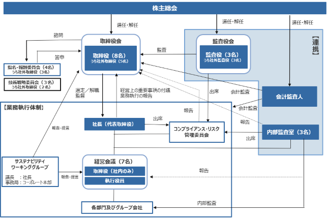

(注) 2024年４月１日から、この有価証券報告書提出日までの会社法第236条、第238条及び第240条の規定に基づく新株予約権（ストック・オプション）の権利行使により発行された株式数は提出日現在の発行数には含まれておりません。
1) 会社法第236条、第238条及び第240条の規定に基づき発行した新株予約権の状況
① 2012年５月31日開催の取締役会において決議されたもの
※ 当事業年度の末日（2024年１月31日）における内容を記載しております。当事業年度の末日から提出日の前月末現在（2024年３月31日）にかけて変更された事項については、提出日の前月末現在における内容を[ ]内に記載しており、その他の事項については当事業年度の末日における内容から変更はありません。
(注) １．新株予約権の１個当たりの目的である株式の数（以下「付与株式数」という）は100株とする。
２．当社が、普通株式につき、株式分割又は株式併合を行う場合には、付与株式数を次の算式により調整し、調整の結果生じる１株未満の端数は、これを切り捨てるものとする。
調整後付与株式数 ＝ 調整前付与株式数 × 株式分割・併合の比率
調整後付与株式数は、株式分割の場合は、当該株式分割の基準日の翌日以降、株式併合の場合は、その効力発生日以降、これを適用する。ただし、剰余金の額を減少して資本金又は準備金を増加する議案が当社株主総会において承認されることを条件として株式分割が行われる場合で、当該株主総会の終結の日以前の日を株式分割のための基準日とする場合は、調整後付与株式数は、当該株主総会の終結の日の翌日以降、当該基準日の翌日に遡及してこれを適用する。
上記の他、割当日後、付与株式数を調整することが適切な場合は、当社は必要と認める調整を行うものとする。
３．新株予約権の行使期間の最終日が当社又は日本の銀行の営業日でない場合には、その前営業日を最終日とする。
４．(1)新株予約権は、新株予約権者が当社の取締役の地位を喪失した場合に限り行使することができる。
(2)新株予約権者は、新株予約権の割当日翌日から、新株予約権者が新株予約権を行使する日までの間に、株式会社東京証券取引所マザーズ市場（当社普通株式の上場市場が変更された場合は、変更後の市場）における当社普通株式の普通取引終値（新株予約権の割当日以降に株式分割又は株式併合が行われた場合は、調整後の価格）が、新株予約権の割当日における当社普通株式の同市場における普通取引終値の130％に相当する額を一度でも上回っている場合に限り新株予約権を行使することができる。
５．当社が、合併（当社が合併により消滅する場合に限る。）、吸収分割若しくは新設分割（それぞれ当社が分割会社となる場合に限る。）、又は株式交換若しくは株式移転（それぞれ当社が完全子会社となる場合に限る。）（以上を総称して以下「組織再編行為」という。）をする場合において、組織再編行為の効力発生の直前において残存する新株予約権（以下「残存新株予約権」という。）を有する新株予約権者に対し、それぞれの場合につき、会社法第236条第１項第８号イからホまでに掲げる株式会社（以下「再編対象会社」という。）の新株予約権をそれぞれ交付することとする。この場合においては、残存新株予約権は消滅し、再編対象会社は新株予約権を新たに発行するものとする。ただし、以下の各号に沿って再編対象会社の新株予約権を交付する旨を、吸収合併契約、新設合併契約、吸収分割契約、新設分割計画、株式交換契約又は株式移転計画において定めることを条件とする。
(1)交付する再編対象会社の新株予約権の数
新株予約権者が保有する残存新株予約権の数と同一の数をそれぞれ交付するものとする。
(2)新株予約権の目的である再編対象会社の株式の種類
再編対象会社の普通株式とする。
(3)新株予約権の目的である再編対象会社の株式の数
組織再編行為の条件等を勘案の上、本新株予約権の取り決めに準じて決定する。
(4)新株予約権の行使に際して出資される財産の価額
交付される各新株予約権の行使に際して出資される財産の価額は、以下に定める再編後払込金額に上記(3)に従って決定される当該各新株予約権の目的である再編対象会社の株式の数を乗じて得た金額とする。再編後払込金額は、交付される各新株予約権を行使することにより交付を受けることができる再編対象会社の株式１株当たり１円とする。
(5)新株予約権を行使することができる期間
表中「新株予約権の行使期間」に定める新株予約権を行使することができる期間の開始日と組織再編行為の効力発生日のうちいずれか遅い日から、表中「新株予約権の行使期間」に定める新株予約権を行使することができる期間の満了日までとする。
(6)新株予約権の行使により株式を発行する場合における増加する資本金及び資本準備金に関する事項
本新株予約権の取り決めに準じて決定する。
(7)譲渡による新株予約権の取得の制限
譲渡による新株予約権の取得については、再編対象会社の取締役会の承認を要するものとする。
(8)新株予約権の取得事由及び条件
本新株予約権の取り決めに準じて決定する。
６．2013年６月19日開催の取締役会決議により、2013年８月１日付で１株を100株とする株式分割を行っております。これにより「新株予約権の目的となる株式の数」、「新株予約権の行使時の払込金額」及び「新株予約権の行使により株式を発行する場合の株式の発行価格及び資本組入額」が調整されております。
② 2017年５月31日開催の取締役会において決議されたもの
※ 当事業年度の末日（2024年１月31日）における内容を記載しております。当事業年度の末日から提出日の前月末現在（2024年３月31日）にかけて変更された事項については、提出日の前月末現在における内容を[ ]内に記載しており、その他の事項については当事業年度の末日における内容から変更はありません。
(注) １．新株予約権の１個当たりの目的である株式の数（以下「付与株式数」という）は100株とする。
２．当社が、普通株式につき、株式分割又は株式併合を行う場合には、付与株式数を次の算式により調整し、調整の結果生じる１株未満の端数は、これを切り捨てるものとする。
調整後付与株式数 ＝ 調整前付与株式数 × 株式分割・併合の比率
調整後付与株式数は、株式分割の場合は、当該株式分割の基準日の翌日以降、株式併合の場合は、その効力
発生日以降、これを適用する。ただし、剰余金の額を減少して資本金又は準備金を増加する議案が当社株主
総会において承認されることを条件として株式分割が行われる場合で、当該株主総会の終結の日以前の日を
株式分割のための基準日とする場合は、調整後付与株式数は、当該株主総会の終結の日の翌日以降、当該基
準日の翌日に遡及してこれを適用する。
上記の他、割当日後、付与株式数を調整することが適切な場合は、当社は必要と認める調整を行うものとする。
３．新株予約権の行使期間の最終日が当社又は日本の銀行の営業日でない場合には、その前営業日を最終日とする。
４．(1)新株予約権者は、表中「新株予約権の行使期間」に定める期間内において、当社の取締役の地位を喪失した日の翌日から10日（ただし、10日目が日本の銀行の営業日でない場合には、その前営業日を最終日とする。）を経過するまでの間に限り、新株予約権を一括してのみ行使することができる。
(2)新株予約権者は、上記(1)に加え、新株予約権の割当日翌日から、新株予約権者が新株予約権を行使する日までの間に、株式会社東京証券取引所マザーズ市場（当社普通株式の上場市場が変更された場合は、変更後の市場）における当社普通株式の普通取引終値（新株予約権の割当日以降に株式分割又は株式併合が行われた場合は、調整後の価格）が、新株予約権の割当日における当社普通株式の同市場における普通取引終値の130％に相当する額を一度でも上回っている場合に限り新株予約権を行使することができる。
５．当社が、合併（当社が合併により消滅する場合に限る。）、吸収分割若しくは新設分割（それぞれ当社が分割会社となる場合に限る。）、又は株式交換若しくは株式移転（それぞれ当社が完全子会社となる場合に限る。）（以上を総称して以下「組織再編行為」という。）をする場合において、組織再編行為の効力発生の直前において残存する新株予約権（以下「残存新株予約権」という。）を有する新株予約権者に対し、それぞれの場合につき、会社法第236条第１項第８号イからホまでに掲げる株式会社（以下「再編対象会社」という。）の新株予約権をそれぞれ交付することとする。この場合においては、残存新株予約権は消滅し、再編対象会社は新株予約権を新たに発行するものとする。ただし、以下の各号に沿って再編対象会社の新株予約権を交付する旨を、吸収合併契約、新設合併契約、吸収分割契約、新設分割計画、株式交換契約又は株式移転計画において定めることを条件とする。
(1)交付する再編対象会社の新株予約権の数
新株予約権者が保有する残存新株予約権の数と同一の数をそれぞれ交付するものとする。
(2)新株予約権の目的である再編対象会社の株式の種類
再編対象会社の普通株式とする。
(3)新株予約権の目的である再編対象会社の株式の数
組織再編行為の条件等を勘案の上、本新株予約権の取り決めに準じて決定する。
(4)新株予約権の行使に際して出資される財産の価額
交付される各新株予約権の行使に際して出資される財産の価額は、以下に定める再編後払込金額に上記(3)に従って決定される当該各新株予約権の目的である再編対象会社の株式の数を乗じて得た金額とする。再編後払込金額は、交付される各新株予約権を行使することにより交付を受けることができる再編対象会社の株式１株当たり１円とする。
(5)新株予約権を行使することができる期間
表中「新株予約権の行使期間」に定める新株予約権を行使することができる期間の開始日と組織再編行為の効力発生日のうちいずれか遅い日から、表中「新株予約権の行使期間」に定める新株予約権を行使することができる期間の満了日までとする。
(6)新株予約権の行使により株式を発行する場合における増加する資本金及び資本準備金に関する事項
本新株予約権の取り決めに準じて決定する。
(7)譲渡による新株予約権の取得の制限
譲渡による新株予約権の取得については、再編対象会社の取締役会の承認を要するものとする。
(8)新株予約権の取得事由及び条件
本新株予約権の取り決めに準じて決定する。
③ 2019年３月15日開催の取締役会において決議されたもの
※ 当事業年度の末日（2024年１月31日）における内容を記載しております。当事業年度の末日から提出日の前月末現在（2024年３月31日）にかけて変更された事項については、提出日の前月末現在における内容を[ ]内に記載しており、その他の事項については当事業年度の末日における内容から変更はありません。
(注) １．新株予約権の１個当たりの目的である株式の数（以下「付与株式数」という）は100株とする。
２．当社が、普通株式につき、株式分割又は株式併合を行う場合には、付与株式数を次の算式により調整し、調整の結果生じる１株未満の端数は、これを切り捨てるものとする。
調整後付与株式数 ＝ 調整前付与株式数 × 株式分割・併合の比率
調整後付与株式数は、株式分割の場合は、当該株式分割の基準日の翌日以降、株式併合の場合は、その効力
発生日以降、これを適用する。ただし、剰余金の額を減少して資本金又は準備金を増加する議案が当社株主
総会において承認されることを条件として株式分割が行われる場合で、当該株主総会の終結の日以前の日を
株式分割のための基準日とする場合は、調整後付与株式数は、当該株主総会の終結の日の翌日以降、当該基
準日の翌日に遡及してこれを適用する。
上記の他、割当日後、付与株式数を調整することが適切な場合は、当社は必要と認める調整を行うものとする。
３．新株予約権の行使期間の最終日が当社又は日本の銀行の営業日でない場合には、その前営業日を最終日とする。
４．(1)新株予約権者は、表中「新株予約権の行使期間」に定める期間内において、当社の取締役の地位を喪失した日の翌日から10日（ただし、10日目が日本の銀行の営業日でない場合には、その前営業日を最終日とする。）を経過するまでの間に限り、新株予約権を一括してのみ行使することができる。
(2)新株予約権者は、上記(1)に加え、新株予約権の割当日翌日から、新株予約権者が新株予約権を行使する日までの間に、株式会社東京証券取引所マザーズ市場（当社普通株式の上場市場が変更された場合は、変更後の市場）における当社普通株式の普通取引終値（新株予約権の割当日以降に株式分割又は株式併合が行われた場合は、調整後の価格）が、新株予約権の割当日における当社普通株式の同市場における普通取引終値の130％に相当する額を一度でも上回っている場合に限り新株予約権を行使することができる。
５．当社が、合併（当社が合併により消滅する場合に限る。）、吸収分割若しくは新設分割（それぞれ当社が分割会社となる場合に限る。）、又は株式交換若しくは株式移転（それぞれ当社が完全子会社となる場合に限る。）（以上を総称して以下「組織再編行為」という。）をする場合において、組織再編行為の効力発生の直前において残存する新株予約権（以下「残存新株予約権」という。）を有する新株予約権者に対し、それぞれの場合につき、会社法第236条第１項第８号イからホまでに掲げる株式会社（以下「再編対象会社」という。）の新株予約権をそれぞれ交付することとする。この場合においては、残存新株予約権は消滅し、再編対象会社は新株予約権を新たに発行するものとする。ただし、以下の各号に沿って再編対象会社の新株予約権を交付する旨を、吸収合併契約、新設合併契約、吸収分割契約、新設分割計画、株式交換契約又は株式移転計画において定めることを条件とする。
(1)交付する再編対象会社の新株予約権の数
新株予約権者が保有する残存新株予約権の数と同一の数をそれぞれ交付するものとする。
(2)新株予約権の目的である再編対象会社の株式の種類
再編対象会社の普通株式とする。
(3)新株予約権の目的である再編対象会社の株式の数
組織再編行為の条件等を勘案の上、本新株予約権の取り決めに準じて決定する。
(4)新株予約権の行使に際して出資される財産の価額
交付される各新株予約権の行使に際して出資される財産の価額は、以下に定める再編後払込金額に上記(3)に従って決定される当該各新株予約権の目的である再編対象会社の株式の数を乗じて得た金額とする。再編後払込金額は、交付される各新株予約権を行使することにより交付を受けることができる再編対象会社の株式１株当たり１円とする。
(5)新株予約権を行使することができる期間
表中「新株予約権の行使期間」に定める新株予約権を行使することができる期間の開始日と組織再編行為の効力発生日のうちいずれか遅い日から、表中「新株予約権の行使期間」に定める新株予約権を行使することができる期間の満了日までとする。
(6)新株予約権の行使により株式を発行する場合における増加する資本金及び資本準備金に関する事項
本新株予約権の取り決めに準じて決定する。
(7)譲渡による新株予約権の取得の制限
譲渡による新株予約権の取得については、再編対象会社の取締役会の承認を要するものとする。
(8)新株予約権の取得事由及び条件
本新株予約権の取り決めに準じて決定する。
該当事項はありません。
③ 【その他の新株予約権等の状況】
該当事項はありません。
該当事項はありません。
(注) １．譲渡制限付株式報酬としての新株式発行による増加であります。
発行価格 912円
資本組入額 456円
割当先 当社取締役６名（うち社外取締役３名）及び執行役員５名
２．譲渡制限付株式報酬としての新株式発行による増加であります。
発行価額 １株につき911円
資本組入額 １株につき455.5円
割当先 当社取締役６名（うち社外取締役３名）及び当社執行役員６名
３．譲渡制限付株式報酬としての新株式発行による増加であります。
発行価額 １株につき874円
資本組入額 １株につき437円
割当先 当社取締役６名（社外取締役３名を含む）、当社執行役員６名
４．2022年４月20日開催の第38回定時株主総会決議により、会社法第447条第１項及び会社法第448条第１項に基づき、資本金12,538,781千円（減資割合42.4％）及び資本準備金152,066千円（減資割合100％）を減少し、その他資本剰余金へ振り替えたものであります。なお、払い戻しを行わない無償減資であります。
５．譲渡制限付株式報酬としての新株式発行による増加であります。
発行価額 １株につき834円
資本組入額 １株につき417円
割当先 当社取締役７名（社外取締役４名を含む）、当社執行役員５名
2024年１月31日現在
（注）自己株式1,807,455株は、「個人その他」に18,074単元、「単元未満株式の状況」に55株含まれております。
2024年１月31日現在
（注）１．発行済株式（自己株式を除く。）の総数に対する所有株式数の割合は、小数点以下３位を四捨五入しております。
２．上記のほか、当社所有の自己株式1,807,455株があります。
３．前事業年度末現在主要株主であったタワー投資顧問株式会社は、当事業年度末では主要株主ではなくなり、清原達郎氏、日本電信電話株式会社が新たに主要株主となりました。
2024年１月31日現在
（注） １．「完全議決権株式（その他）」欄には、従業員インセンティブ・プラン「株式給付信託（J-ESOP）」制度の信託財産として株式会社日本カストディ銀行が保有している当社株式404,800株を含めて表示しております。
２．「単元未満株式」欄の普通株式には、当社保有の自己株式55株が含まれております。
2024年１月31日現在
（注） １．上記のほか、連結財務諸表において自己株式として認識している株式が404,800株あります。これは、前記「発行済株式」に記載の株式会社日本カストディ銀行が保有している株式であり、会計処理上、当社と信託口は一体であると認識し、信託口が所有する株式を自己株式として計上していることによるものであります。
２．上記には、単元未満株式55株は含まれておりません。
(8) 【役員・従業員株式所有制度の内容】
①本制度の概要
当社は、当社の中長期的な企業価値を高めることを目的として、従業員インセンティブ・プラン「株式給付信託（J-ESOP）」（以下、本制度）を導入しております。
本制度は、予め定めた株式給付規程に基づき、当社の従業員が受給権を取得した場合に当社株式又は金銭を給付する仕組みです。
当社では、従業員に会社業績の達成度及び各人の成果に応じてポイントを付与し、一定の条件により受給権を取得した従業員に対し、当該付与ポイントに相当する当社株式又は金銭を給付します。従業員に対し給付する株式については、予め信託設定した金銭により将来分も含め取得し、信託財産として分別管理するものとします。
本制度の導入により、従業員の勤労意欲や株価への関心が高まるほか、優秀な人材の確保にも寄与することが期待されます。
②従業員等に取得させる予定の株式の総数
404,800株
③本制度による受益権その他の権利を受け取ることができる者の範囲
一定の要件を満たす当社の従業員
該当事項はありません。
該当事項はありません。
該当事項はありません。
（注） １．上記には、株式給付信託口が保有する当社株式は含まれておりません。
２．当期間における保有自己株式には、2024年４月１日からこの有価証券報告書提出日までの単元未満株式の買取りによる株式は含まれておりません。
当社は、株主に対する利益還元を重要な課題の一つとして位置付けており、利益配分につきましては、内部留保の充実等に留意しつつ、事業展開の状況と各期の経営成績を総合的に勘案して安定的な利益還元を行うことを基本方針としております。
当社は、中間配当と期末配当の年２回の剰余金の配当を行うことができるものとしておりますが、現状期末配当のみを実施しております。配当の決定機関は、中間配当は取締役会、期末配当は株主総会であります。
当連結会計年度におきましては、連結業績を踏まえ誠に遺憾ながら無配とさせて頂きました。また、2025年１月期の配当予想につきましては、通期連結業績予想は黒字化を見込んでおりますが、当社グループ全体の財政状況を勘案し、現時点においては配当予想につきましては未定とさせていただきます。
今後の方針としましては、安定的な利益創出と充分な繰越利益剰余金の蓄積が実現された段階で株主への利益還元施策を開始する所存であり、それに向けて継続的な事業成長を実現し、出来るだけ早期に株主の皆様への安定的な配当を実施させていただけるよう努めてまいります。
当社グループは、以下の企業理念を意思決定の根幹の考え方と位置づけ、すべてのステークホルダーの期待・信頼に応えるため、経営の適法性・健全性・透明性を確保するとともに、迅速な意思決定と効率的な業務執行並びに監督・監査機能強化を実現する経営体制を構築し、経営・執行責任の明確化を推進するとともに、コーポレートガバナンスの充実に継続的に取り組むこととしております。
・企業理念
当社グループは「CONNECT YOUR DREAMS TO THE FUTURE.」をスローガンに掲げ、すべての機器をネットにつないできた先駆的存在として、これからも当社グループの「つなぐ」技術により新たな価値創造に資する技術・製品を開発・提供し続けあらゆるステークホルダーに貢献することが当社グループの使命であり、以下の理念を意思決定の軸としております。
Vision Statement:「技術」「知恵」「創造性」と「勇気」で世界を革新し続ける独立系、企画・研究型企業
Core Value: Unique／Fair／Open-minded
Unique・・・・・・・・・・個性、独創性を大切にし、先駆者を称賛する
前例のない挑戦に対する失敗は奨励
Fair・・・・・・・・・・・顧客、株主、従業員とその家族、社会、多様な文化、価値観、
技術を広く尊重し、公明正大である
Open-minded・・・・・・・ 先入観、偏見、常識にとらわれない
国内にも海外にも広い視野を持つ
（企業統治の体制の概要）
当社は、会社法上の機関設計として、監査役会設置会社を選択しており、取締役会と監査役会という企業統治の基礎となる基本設計のほか、以下に記載の各種会議体を設置し、コーポレート・ガバナンスの充実を図っております。
取締役会は、取締役８名（うち社外取締役５名）で構成しており、会社の経営方針、経営戦略、事業計画、重要な財産の取得及び処分、重要な組織及び人事に関する意思決定、並びに当社及び子会社の業務執行の監督を行っております。取締役会議長は、取締役会決議により、代表取締役社長執行役員を選任しております。
取締役会は、月１回の定例開催と必要に応じた臨時開催があり、その場で迅速な意思決定を行っております。取締役会は、会社の経営方針、経営戦略、事業計画、重要な財産の取得及び処分、重要な組織及び人事に関する意思決定、並びに当社及び子会社の業務執行の監督を通じて、経営全般に対する監督機能を発揮し、持続的な企業価値の向上に努めております。当社の取締役会には、５名の社外取締役が選任されております。社外取締役は、取締役会及び臨時取締役会に出席し、業績その他の経営状況の把握に努め、客観的立場から助言を行い意見を述べています。
監査役会は、監査役３名（全て社外監査役）で構成されており、各監査役による監査の実効性を確保するための体制整備に努めております。各監査役は、監査役会が定めた監査の方針、業務分担などに従い、取締役会への出席や重要書類の閲覧などを通じて、取締役会の職務執行及び取締役会の監督義務の履行状況について適法性監査及び妥当性監査を行っており、持続的な企業価値の向上に向けて、企業の健全性を確保し、株主共同の利益のための行動を行っております。
また、取締役の職務執行の監督・牽制機能を高めるため、代表取締役、取締役、執行役員の候補者や報酬等の決定に関わる諮問機関として、独立社外取締役３名と代表取締役社長執行役員１名を構成員とする指名・報酬委員会を設置しており、取締役会長（独立社外取締役）を議長として選任しております。なお、当社の技術開発に関する事項について、幅広く情報共有・議論を行い、意思決定が行われる際の諮問機関として、社外取締役２名と取締役専務執行役員CTO１名を構成員とする技術戦略委員会を設置しております。
当社は、当社グループ全体の経営に関する基本方針及び重要施策について迅速かつ適時に審議・決定することにより、効果的・効率的に経営を推進するため、経営会議を置いております。経営会議は、代表取締役社長執行役員及び役付執行役員、並びに社長執行役員が特に指名した者（全社内取締役、管理担当を含む執行役員計７名）で構成され、議長は、代表取締役社長執行役員であります。原則として月１回この会議を開催することにより、経営課題の迅速な把握と施策の決定・推進を行っております。
また、代表取締役社長執行役員及び管理関係部門の責任者をメンバーとし、常勤監査役２名をオブザーバーとするコンプライアンス・リスク管理委員会を設置しており、各部門のリスク状況の区分・把握・報告、規程の立案・制定を含むリスク管理体制の整備を行うとともに、未然防止策・対応策の立案・実行その他必要な事項の実施に関し、モニタリングを行い、これらの活動状況に関し、適時取締役会に対し、報告を行っております。
会計監査人につきましては、有限責任 あずさ監査法人と監査契約を締結しております。会計監査人は、経営者及び監査役会との間で定期的なディスカッションを行っております。
各機関の構成員は以下のとおりです。
(注) １．◎は議長又は委員長、〇は構成員、△は出席者を表しております。
２．経営会議及びコンプライアンス・リスク管理委員会の構成員には、上記のほか関係する業務運営組織の長等が含まれます。
（企業統治の体制の採用理由）
当社は、複数の社外取締役選任や、監査役会及び指名・報酬委員会の設置によって、十分なガバナンス機能及び機構を保有できているものと考えます。特に、産業界において卓越した経験を有し、当社経営陣に対して有効な監督能力を有する社外取締役や、業界に関する豊富な経験と知見を有する社外監査役を配置することにより、経営に対する十分な監督機能を発揮できているものと確信しています。
当社の社外取締役は、コンプライアンスやリスク管理について、自らの実践例や経験を基に、あるべき姿を提示することにより、当社の経営陣が過ちを犯すことがないように監督することにその主たる役割と機能を有しております。
当社の企業統治体制は、以下のとおりであります。

③ 企業統治に関するその他の事項
（内部統制システムの整備の状況）
取締役の職務の執行が法令及び定款に適合することを確保するための体制、その他株式会社の業務ならびに当該株式会社及びその子会社から成る企業集団の業務の適正を確保する体制についての決定内容の概要は、以下のとおりであります。
１．当社及び当社子会社の取締役の職務の執行が法令及び定款に適合することを確保するための体制
(1)企業理念「Vision Statement」を策定し、当社グループ役職員全員の目指す方針及び基本的価値観とするほか、実践すべき行動の基準・規範を定めた「企業行動基準」、「コンプライアンス・リスク管理規程」等を制定し、周知徹底を図る。
(2)取締役会において取締役会規程を制定し、当該規程に定める基準に従って会社の重要な業務執行を決定する。
(3)取締役会が取締役の職務の執行を監督するために、取締役は、会社の業務執行状況を定期的に取締役会に報告するとともに、他の取締役の職務執行を相互に監視、監督する。
(4)取締役の職務執行状況は、監査基準及び監査計画に従い、社外監査役を含む監査役の監査を受ける。
(5)株主総会において知識・経験の豊富な社外取締役を選任し、良識に基づいた大所高所からの意見、助言を得る。
(6)「内部通報制度および通報者の保護に関する規程」を整備し、匿名及び外部窓口経由による方法も含め、コンプライアンス関連の通報、相談を受け付ける。通報の事実は秘密に保持し、内部通報者に対して不利益となる措置を行わない。
(7)社会の秩序や企業の健全な活動に脅威を与える反社会的勢力に対しては、組織全体として毅然とした態度で対応し、取引関係その他一切の関係をもたない体制を整備する。
２．取締役の職務の執行に係る情報の保存及び管理に関する体制
(1)取締役の職務の執行に係る情報については、法令及び「文書管理規程」を含む社内規程に従い、書面（電磁的記録を含む）により作成、保管、保存するとともに、取締役、監査役、会計監査人による閲覧、謄写に供する。
(2)取締役の職務の執行に係る情報については、法令又は「上場有価証券の発行者の会社情報の適時開示等に関する規則」に従い、必要十分な情報開示を行う。
(3)情報セキュリティについては、「ACCESSグローバル情報セキュリティ基本方針」、「情報セキュリティガイドライン」等を策定するとともに、「情報セキュリティ委員会」の設置、開催を通して、情報セキュリティ管理体制を整備し、安全かつ適正な情報資産の保有、活用、管理に取り組む。
３．当社及び当社子会社の損失の危険の管理に関する規程その他の体制
(1)「コンプライアンス・リスク管理委員会」を設置し、各部門及び各子会社のリスク管理業務を統括し、リスク管理の基本方針、推進体制、リスク管理に関する規程の立案その他重要事項を総合的に決定する。
(2)「コンプライアンス・リスク管理委員会」は、各部門及び各子会社について監視すべきリスクを識別し、関連する各部門、プロジェクトチーム及び役職員からのインプットに基づいて、リスク及びコントロール状況のモニタリングを行う。
(3)当社及び当社子会社の経営に重大な影響を及ぼすような危機的なリスクが、万が一発生した場合には、代表取締役社長執行役員を本部長とする対策本部を設置し、外部アドバイザーと連携して、迅速な対応を行うことにより損害を最小限に抑えるとともに、再発防止のための対策を講ずる。
(4)経営上の重大なリスクへの対応方針その他損失の危険に関する重要な事項は、経営会議において十分な審議を行うほか、特に重要なものについては取締役会で報告する。
４．当社及び当社子会社の取締役の職務の執行が効率的に行われることを確保するための体制
(1)経営上の意思決定と業務執行との分離、迅速な意思決定及び権限と責任の明確化を図る観点から、執行役員制度を採用する。取締役会は、会社法に従い経営戦略及び重要な業務執行の決定並びに業務執行の監視・監督の機能を担い、代表取締役及び一部の業務担当取締役並びに各部門の長の中から選任された者は、執行役員として業務を執行する。
(2)代表取締役社長執行役員及び役付執行役員、並びに社長執行役員が特に指名した者から構成される経営会議を設置し、当社グループ全体の基本方針及び重要な業務執行事項について審議し、取締役会で決定すべき事項を除きその決定を行う。
(3)企業理念を踏まえて、当社グループ全体の中期経営計画及び年次事業計画・予算を策定し、その進捗を確認する。また、原価管理や経営情報の迅速かつ正確な把握を可能にするために、必要な基幹システムを構築する。
(4)組織、権限及び業務分掌に関する社内規程を制定し、役割、権限、責任及び手続の明確化を図る。
５．財務報告の信頼性と適正性を確保するための体制
当社及び当社子会社の財務報告に係る内部統制については、金融商品取引法その他適用のある国内外の法令の定めに従い、健全な内部統制環境の保持に努め、全社及び業務プロセスにおける統制活動を強化し、評価、維持、改善等を行うことで、財務報告の信頼性と適正性を確保する。
６．当社及び当社子会社の使用人の職務の執行が法令及び定款に適合することを確保するための体制
(1)企業理念「Vision Statement」を策定し、当社グループ役職員全員の目指す方針及び基本的価値観とするほか、すべての社員が実践すべき行動の基準・規範を定めた「企業行動基準」、「コンプライアンス・リスク管理規程」等を制定し、周知徹底を図る。問題があった場合には、就業規則に従い、厳正な処分を行う。
(2)代表取締役社長執行役員は、機会があるごとに、コンプライアンス（法令遵守、企業倫理）の重要性及びこれに真剣に取り組む会社の方針・決意を社員に伝達する。
(3)「内部通報制度および通報者の保護に関する規程」を整備し、コンプライアンス関連の通報、相談を受け付けるとともに、運用状況を定期的に監査役に報告する。通報の事実は秘密に保持し、内部通報者に対して不利益となる措置を行わない。
(4)代表取締役社長執行役員直轄の内部監査室を設置し、定期的に内部監査を実施し、被監査部門に改善点等をフィードバックするとともに、代表取締役社長執行役員及び監査役にその活動状況を報告する。内部監査室長は、取締役会及び監査役会を除き、必要に応じて、一切の社内会議に出席する権限を有する。
(5)「コンプライアンス・リスク管理委員会」及び法務部門が中心となって、コンプライアンスに関する社員向けセミナー、研修を開催し、教育、啓発活動を行う。
７．当社企業集団における業務の適正を確保するための体制
(1)子会社の取締役又は監査役として、当社の取締役、監査役、執行役員又は社員を派遣する。派遣された者は、子会社の取締役又は監査役として、子会社の取締役の業務執行の監視・監督又は監査を行う。
(2)子会社の事業計画、経営状況、業務執行の状況等は、経営会議若しくは、代表取締役社長執行役員及び役付執行役員が特に指名した者から構成される海外取締役会に報告させることにより、当社グループ全体の業務執行状況の適時把握を図り、必要に応じて改善点等を指摘する。
(3)各子会社は、自社の規模、事業の性質、所在国その他会社の特性を踏まえて、当社と連携をとりつつ、独自に内部統制システムの整備を行う。
(4)企業理念に加え、当社グループ役職員全員が実践すべき行動の基準・規範を定めた「企業行動基準」を制定し、周知徹底を図る。また、所在国の状況に応じて各子会社は、「コンプライアンス・リスク管理規程」等を制定し、実践する。
(5)当社と子会社間の取引条件については、統一的な取引スキームを設定して、いずれかに著しく不利益となったり、恣意的なものとなったりしないようにする。
８．監査役がその職務を補助すべき使用人を置くことを求めた場合における当該使用人に関する事項
(1)監査役から必要として要請があったときには、監査役の指揮命令下に監査役の職務を補助すべき社員を配置する。
(2)監査役の職務を補助すべき社員の人数、資格等に関しては、監査役と代表取締役社長執行役員との間の協議により決定する。
９．監査役の職務を補助する使用人の取締役からの独立性に関する事項
(1)監査役の職務を補助する社員は、監査役の指揮命令下に置かれ、その業務に専念する。
(2)監査役の職務を補助する社員の任命、異動等に関しては、監査役と代表取締役社長執行役員との間の協議により決定する。
(3)監査役の職務を補助する社員の人事考課、目標管理等については、常勤監査役が行う。
10．当社及び当社子会社の取締役及び使用人が監査役に報告をするための体制その他の監査役への報告に関する体制
(1)監査役は、取締役会の他、必要に応じて、一切の社内会議に出席する権限を有する。
(2)当社及び当社子会社の取締役、執行役員、社員は、監査役の求めに応じて、各社の業務執行の状況を報告する。
(3)当社及び当社子会社の取締役は、各社に著しい損害を及ぼす恐れのある事実を発見したときは、直ちに監査役会に報告する。
(4)当社は、当社及び当社子会社の取締役及び使用人が、監査役への報告を行ったことを理由として不利な取り扱いを行うことを禁止する。
11．その他監査役の監査が実効的に行われることを確保するための体制
(1)社外監査役として、企業経営に精通した経験者・有識者や公認会計士等の有資格者を招聘し、代表取締役社長執行役員や執行役員等、業務を執行する者からの独立性を保持する。
(2)監査役会は、代表取締役社長執行役員と定期的に会議をもち、重要課題等について協議、意見交換を行う。
(3)監査役は、内部監査室と緊密な連携を保ち、必要に応じて、内部監査室に調査を依頼することができる。
(4)監査役は、会計監査人と定期的に会議をもち、意見及び情報の交換を行う。
(5)監査役が職務の執行のために合理的な費用の支払いを請求した場合、速やかに応じる。
（業務の適正を確保するための体制の運用状況の概要）
当社では、「業務の適正を確保するための体制」に基づき、社内体制を整備するとともに、適切な運用に努めております。当事業年度における業務の適正を確保するための体制の運用状況の概要は、以下のとおりであります。
１．取締役の職務の適正及び効率性の確保に関する事項
取締役会は、提出日現在、社外取締役５名を含む取締役８名で構成され、監査役３名（全て社外監査役）も出席しております。当期においては、取締役会を15回開催し、重要な意思決定、職務執行の状況報告等について活発な意見交換が行われ、監督がなされているほか、取締役会の実効性評価実施により、実効性を確認しております。
２．リスク管理に関する事項
代表取締役社長執行役員及び管理関係部門の責任者をメンバーとし、常勤監査役２名をオブザーバーとするコンプライアンス・リスク管理委員会を設置しており、各部門のリスク状況の区分・把握・報告、規程の立案・制定を含むリスク管理体制の整備を行うとともに、未然防止策・対応策の立案・実行その他必要な事項の実施に関し、モニタリングを行い、これらの活動状況に関し、適時取締役会に対し、報告を行っております。
３．コンプライアンスに関する事項
当社グループの役職員に対し、コンプライアンス意識の向上に努めるため、定期的にコンプライアンスセミナー、その他研修を開催いたしております。また、「内部通報制度および通報者の保護に関する規程」を整備した上で、内部通報窓口を開設し、問題の早期発見、早期解決に取り組んでおります。
４．内部監査に関する事項
内部監査室により、社内各部署及び当社グループ各社が、法令、定款、規程その他社会規範等に則し、適切な業務運営がなされているか、書類の閲覧及びヒアリング等を通じて監査を行っております。内部監査室長は、これらの監査結果について、取締役及び監査役並びに執行役員が出席する経営会議において報告を行うほか、取締役会及び監査役会に対する報告を適宜行っております。
５．監査役監査に関する事項
常勤監査役２名は、取締役会、経営会議等の重要な会議に出席するほか、役職員に対し個別のヒアリングを行うことにより、取締役の業務の執行状況やコンプライアンスに関する問題点を確認するとともに、会計監査人及び内部監査室とも情報交換を行っており、経営監視機能の強化及び向上を図っております。
④ リスク管理体制の整備
当社のリスク管理体制は、法令遵守にかかる事項について、常勤の取締役及び執行役員と臨機応変に確認をし、各部門長が部門内に周知徹底をしております。また、コンプライアンス・リスク管理委員会において企業活動にかかるリスク管理を実施し、定期的な内部監査の実施により、法令の遵守及びリスク管理において問題がないかを検証しております。
当社と社外取締役は、会社法第427条第１項および当社定款第27条の規定に基づき、損害賠償責任を限定する契約を締結しております。同様に、社外監査役とは、会社法第427条第１項および当社定款第35条の規定に基づき、損害賠償責任を限定する契約を締結しております。当該契約に基づく損害賠償責任の限度額は、会社法第425条第１項各号に定める額としております。
当社は、会社法第430条の３第１項に規定する役員等賠償責任保険契約を締結しております。当該保険契約の被保険者は当社取締役、監査役、執行役員、子会社の取締役、監査役及びこれらの相続人であります。保険料は全額当社が負担しております。故意又は重過失に起因する損害賠償請求は、当該保険契約により填補されません。
⑦ 取締役の定数
当社の取締役は、10名以内とする旨定款に定めております。
当社は、取締役の選任決議について、議決権を行使することができる株主の議決権の３分の１以上を有する株主が出席し、その議決権の過半数をもって行う旨、また、累積投票によらない旨について定款に定めております。
⑨ 自己株式の取得
当社は、機動的な資本政策を遂行できるように、会社法第165条第２項の規定により、取締役会の決議によって市場取引等により、自己の株式を取得することができる旨を定款に定めております。
⑩ 中間配当
当社は、機動的な利益還元を行うため、会社法第454条第５項の定めにより、取締役会の決議によって、毎年７月31日を基準日として中間配当をすることができる旨を定款に定めております。
当社は、会社法第309条第２項に定める株主総会の特別決議要件について、議決権を行使することができる株主の議決権の３分の１以上を有する株主が出席し、その議決権の３分の２以上をもって行う旨定款に定めております。これは、株主総会における特別決議の定足数を緩和することにより、株主総会の円滑な運営を行うことを目的とするものであります。
⑫ 取締役会の活動状況
当事業年度において当社は取締役会を15回開催しており、個々の取締役の出席状況については次のとおりであります。
（注）１．富田亜紀氏は、就任後に開催された全ての取締役会に出席しております。
２．書面決議による取締役会の回数（当期１回）は除いております。
取締役会における具体的な検討内容として、会社の経営方針、経営戦略、事業計画、重要な財産の取得及び処分、重要な組織及び人事に関する意思決定、並びに当社及び子会社の業務執行の監督を行っております。
⑬ 指名・報酬委員会の活動状況
当事業年度において当社は指名・報酬委員会を２回開催しており、個々の指名・報酬委員の出席状況については次のとおりであります。
（注）富田亜紀氏は、就任後に開催された全ての指名・報酬委員会に出席しております。
指名・報酬委員会における具体的な検討内容として、取締役会の諮問を受け、代表取締役、取締役、執行役員の候補者や報酬等について審議し、答申しております。
男性
(注) １．取締役 細川恒氏、宮内義彦氏、水盛五実氏、富田亜紀氏及び池田敬氏は、社外取締役であります。
２．監査役 加藤康雄氏、井本隆幸氏及び古川雅一氏は、社外監査役であります。
３．取締役の任期は、2024年４月24日開催の定時株主総会の終結の時から、2025年１月期に係る定時株主総会の終結の時までであります。
４．監査役の任期は、2023年４月20日開催の定時株主総会の終結の時から、2027年１月期に係る定時株主総会の終結の時までであります。
５．当社は、法令に定める監査役の員数を欠くことになる場合に備え、会社法第329条第３項に定める補欠監査役１名を選任しております。補欠監査役の略歴は次のとおりであります。
1) 社外取締役及び社外監査役の員数
当社は、社外取締役５名及び社外監査役３名を選任しております。
当社の社外役員の選任状況は、下記のとおりであります。
2) 社外取締役又は社外監査役が企業統治において果たす機能及び役割
社外取締役には、当社の経営陣から独立した客観的な視点に基づき、豊富な経験と幅広い見識を活かして経営全般に対する監督、チェック機能を果たしていただくことを期待し、選任しています。また、社外監査役に関しては、公認会計士や他社での豊富な業務経験、知見に基づき、独立の機関として取締役の業務執行を監査いただくことを期待しております。
3) 当該社外取締役又は社外監査役を選任するための提出会社からの独立性に関する基準又は方針
当社の社外役員の選任にあたっては、当社が定める「独立役員選任基準」をもとに、次の項目のいずれにも該当しない場合、当該社外役員は当社からの独立性を有し、一般株主と利益相反が生じるおそれがないものと判断しております。
（独立役員選任基準）
１．当社グループの業務執行取締役、執行役員、支配人その他の使用人（以下併せて「業務執行者等」という）である者、又はあった者
２．当社グループの現在の主要株主（議決権所有割合が10%以上の株主をいう）、又は当該主要株主が法人である場合には当該主要株主又はその親会社若しくは重要な子会社の業務執行者等
３．最近５年間において、当社の現在の主要株主又はその親会社若しくは重要な子会社の業務執行者等であった者
４．当社グループを主要な取引先とする者（その者の直近事業年度における年間連結総売上高の２%以上の支払いを、当社グループから受けた者をいう）若しくは当社グループの主要な取引先である者（当社グループに対して、当社グループの直近事業年度における年間連結総売上高の２%以上の支払いを行っていた者をいう）、又はその親会社若しくは重要な子会社、又はそれらの者が会社である場合における当該会社の業務執行者等
５．直近事業年度に先行する３事業年度のいずれかにおいて、当社グループを主要な取引先としていた者若しくは当社グループの主要な取引先であった者、又はその親会社若しくは重要な子会社、又はそれらの者が会社である場合における当該会社の業務執行者等
６．当社グループから一定額（過去３事業年度の平均で年間1,000万円）を超える寄付又は助成を受けている組織の理事（業務執行に当たる者に限る）その他の業務執行者（当該組織の業務を執行する役員、社員又は使用人をいう）
７．当社グループから取締役（常勤・非常勤を問わない）を受け入れている会社、又はその親会社若しくは子会社の業務執行者等
８．現在当社グループの会計監査人である公認会計士又は監査法人（若しくは税理士法人）の社員、パートナー又は従業員である者
９．当社グループから役員報酬以外に多額（過去３年間の平均で年間1,000万円以上）の金銭その他の財産を得ているコンサルタント、会計専門家又は法律専門家（当該財産を得ている者が法人、組合等の団体である場合は、当該団体に所属する者）
10．上記１から９に該当する者（重要な地位にある者に限る）の配偶者又は二親等内の親族若しくは同居の親族
上記１から10に該当する場合にあっても、当該人物の人格、識見等に照らし、独立性があると判断した者については、社外役員選任時においてその理由を説明・開示すること及び当該人物が会社法上の社外取締役又は社外監査役の要件を充足していることを条件に、当該人物を当社の独立役員とすることができるものとする。
③ 社外取締役又は社外監査役による監督又は監査と内部監査、監査役監査及び会計監査との相互連携並びに内部統制部門との関係
社外取締役は、取締役会に出席し経営課題等に関して独立した立場から適切な助言を行うとともに、取締役の職務の執行を監督しております。
社外監査役は、取締役会に出席し助言を行うとともに、取締役の職務執行を監督しております。また、常勤の社外監査役は、経営会議にも出席し助言を行っております。
社外取締役又は社外監査役による監督又は監査と内部監査、監査役監査及び会計監査との間においては、監督及び監査結果について相互に情報共有する等、適切な監督及び監査を行うため連携強化に努めております。また、社外取締役又は社外監査役による監督又は監査と当社内部統制部門との間においては、必要に応じて情報交換を行う等、適正な業務執行の確保のため連携をとっております。
(3) 【監査の状況】
監査役は、監査役会が定めた監査の方針、業務分担などに従い、取締役会への出席や重要書類の閲覧などを通じて、取締役会の職務執行について監査しております。なお、監査役会は提出日現在３名で構成されており、３名とも財務及び会計に関する相当程度の知見を有しています。
監査役会は原則として月１回開催されるほか、必要に応じ随時開催されます。当連結会計年度においては16回開催しており、個々の監査役の出席状況は以下のとおりです。
（注）井本隆幸氏は、就任後に開催された全ての監査役会に出席しております。
監査役会における主な検討事項は、監査方針と監査実施計画の策定、監査結果と監査報告書の作成、会計監査人の評価と選解任及び監査報酬の同意に係る事項、当社グループのコーポレート・ガバナンスや内部統制システムの整備・運用状況等です。
また、常勤監査役の活動として、取締役会や経営会議等の重要会議への出席、重要な決裁書類や各種契約書等の閲覧、業務執行部門への聴取等を通じて会社状況を把握することで経営の健全性を監査し、非常勤監査役への情報共有を行うことで監査機能の充実を図っております。
当社における内部監査は、内部監査室（３名）が担当しており、当社及び当社子会社を対象に、年度監査計画に基づき、業務及び内部統制の有効性、効率性及びコンプライアンスの観点から業務監査を実施し、必要に応じて改善に向けた提案を行っております。内部監査の結果につきましては、代表取締役社長執行役員、監査役、及び経営会議に報告するとともに、改善が完了するまで確認を続けることにより、内部統制の維持向上に寄与しております。
監査役は会計監査人から監査計画及び監査実施状況並びに「職務の遂行が適正に行われることを確保するための体制」等につき定期的に報告を受けて、監査結果及び会計監査の状況を確認しています。また、監査役は内部監査室から監査計画並びに監査業務遂行状況及び監査結果について定期的に報告を受けており、必要に応じて随時意見交換、情報交換を行っております。内部監査室と会計監査人も定期的に情報交換をしております。
さらに監査役と内部監査室長は「コンプライアンス・リスク管理委員会」に出席し、財務報告に係る内部統制の評価を含むリスク及びコントロール状況のモニタリング情報を共有することにより、監査の有効性及び効率性の向上を図っております。
a. 監査法人の名称
有限責任 あずさ監査法人
b. 継続監査期間
1998年以降
c. 業務を執行した公認会計士
指定有限責任社員 業務執行社員 齋藤 慶典
指定有限責任社員 業務執行社員 上野 陽一
d. 監査業務に係る補助者の構成
当社の監査業務に係る補助者の構成は、公認会計士５名、公認会計士試験合格者５名、その他６名となっております。
当社の監査役会は、公益社団法人日本監査役協会が公表している「会計監査人の評価及び選定基準策定に関する監査役等の実務指針」に基づき、会計監査人の品質管理の状況、独立性及び専門性、監査体制が整備されていること、具体的な監査計画並びに監査報酬が合理的かつ妥当であることを確認し、監査実績などを踏まえたうえで、会計監査人を総合的に評価し、選定について判断しております。
監査役会は、会計監査人の職務の執行に支障がある場合等、その必要があると判断した場合は、株主総会に提出する会計監査人の解任又は不再任に関する議案の内容を決定いたします。また、会計監査人が会社法第340条第1項各号に定める項目に該当すると認められる場合は、監査役全員の同意に基づき、会計監査人を解任いたします。この場合、監査役会が選定した監査役は、解任後最初に招集される株主総会におきまして、会計監査人を解任した旨とその理由を報告いたします。
なお、取締役会が、会計監査人の職務の執行に支障がある場合等、その必要があると判断した場合は、会計監査人の解任又は不再任を株主総会の会議の目的とすることを監査役会に請求し、監査役会はその適否を判断したうえで、株主総会に提出する議案の内容を決定いたします。
f. 監査役及び監査役会による監査法人の評価
当社の監査役及び監査役会は、上述会計監査人の選定方針に掲げた基準の適否に加え、日頃の監査活動等を通じ、経営者・監査役・経理部・内部監査室等とのコミュニケーション、グループ全体の監査、不正リスクへの対応等が適切に行われているかという観点で評価した結果、有限責任 あずさ監査法人は会計監査人として適切であると評価しております。
a. 監査公認会計士等に対する報酬
(注) 連結子会社における非監査業務の内容は、税務に関するアドバイザリー業務等であります。
該当事項はありません。
当社の監査公認会計士等に対する監査報酬の決定方針といたしまして、特別な方針等は定めておりませんが、その決定に当たっては監査業務に要する日数等を勘案して決定することとしております。
取締役会が提案した会計監査人に対する報酬等に対して、当社の監査役会が会社法第399条第１項の同意をした理由は次のとおりであります。
監査役会は、取締役、社内関係部署及び会計監査人から必要な資料を入手しかつ報告を受け、会計監査人の監査計画の内容、会計監査の職務遂行状況及び報酬見積りの算出根拠などが適切であるかについて必要な検証を行い、会計監査人が所要の監査体制・監査時間を確保し、適正な監査を実施するために妥当な水準であると認められたため、会計監査人の報酬等の額について同意しました。
(4) 【役員の報酬等】
当社は、2021年２月24日開催の取締役会において、取締役の個人別の報酬等の内容に係る基本方針を決議しております。当該基本方針は、指名・報酬委員会による諮問を経た議案に基づくものであります。
また、当連結会計年度に係る取締役の個人別の報酬等の内容は、指名・報酬委員会が当該基本方針との整合性を含めた検討を行っているため、取締役会も基本的にその答申を尊重し基本方針に沿うものであると判断しております。取締役の報酬決定の基本方針及び報酬体系の内容は以下のとおりであります。
（基本方針）
当社は、取締役の報酬に関して、「公正性」、「透明性」が高く、業績に対する報酬として妥当な水準とするため、代表取締役社長執行役員、独立社外取締役から構成される指名・報酬委員会による諮問を経て、取締役会決議により具体的な金額を決定しております。当事業年度は指名・報酬委員会を２回開催し、取締役の報酬について審議いたしました。
取締役の個人別の報酬は、その役割と責務及び当社の年間計画、中期計画等の達成度により決定するものとし、株主との価値共有、持続的かつ中長期的な企業価値の最大化への動機づけや、優秀な人材確保を可能とすることを基本方針としております。取締役の報酬体系は、「基本報酬」、「賞与」、「株式報酬」で構成され、1996年11月１日の有限会社アクセス臨時社員総会において承認された年額５億円の報酬枠の範囲内で支給することとしております。当該臨時社員総会終結時点の対象取締役の員数は４名です。株式報酬については、2019年４月17日開催の第35回定時株主総会において、当該報酬枠のうち、年額２億円（うち社外取締役分は２千万円）、割り当てる当社株式の総数を年20万株（うち社外取締役分は２万株）の範囲内として承認されております。第35回定時株主総会終結時点の対象取締役の員数は６名（うち社外取締役は３名）です。
(1)基本報酬は、各取締役の役位に基づく毎月の定額金銭報酬とし、経営環境や他社水準等を考慮し、決定しております。
(2)賞与は、単年度の業績や個人別評価に応じて決定しており、年間計画に基づき設定した連結売上高及び連結営業利益のそれぞれの目標値を達成した上で、達成度の低い指標の達成度に応じた業績評価（０～100％の範囲で変動）を乗じて求めた金額を算出し、事業年度後に一括支給します。なお、当該指標を評価指標として選択した理由は、当期の業務執行の成果を総合的かつ客観的に示していると判断したためです。
なお、当期における目標値と実績値については以下のとおりであります。
(3)株式報酬は、2019年４月17日開催の第35回定時株主総会で譲渡制限付株式報酬を導入しており、中長期の株価向上への動機づけとリテンションを目的に一定期間の在籍を条件に支給する非業績連動部分である「在籍条件型（基本報酬の15％相当）」と中期計画等の達成度に連動する業績連動部分である「業績条件型（基本報酬の50％相当）」で構成されます。「業績条件型」の株式報酬は、役員報酬と株主価値との連動性をより明確にするため、株主総利回り（TSR）を業績連動報酬の業績評価指標としております。
(4)報酬の構成比率
取締役に対する「基本報酬」「短期業績連動報酬（賞与）」「株式報酬」の比率は、業績目標をすべて達成した場合において51：16：33を目安に設定しております。
なお、社外取締役を含む非業務執行取締役の報酬は、基本報酬と株式報酬（在籍条件型のみ）で構成するものとしており、監査役につきましては、基本報酬のみで構成され、1996年11月１日の有限会社アクセス臨時社員総会において承認された年額１億円の範囲内で、監査役の協議により決定しております。当該臨時社員総会終結時点の対象監査役の員数は１名です。
(注) １．株式報酬による報酬額は、当事業年度に費用処理した金額であります。
２．取締役１名は、上記表中の支給額とは別に連結子会社から固定報酬（基本報酬）30,892千円が支給されております。
３．上記の員数には、2023年４月20日で退任した監査役１名が含まれております。
連結報酬等の総額が１億円以上である者が存在しないため、記載しておりません。
(5) 【株式の保有状況】
当社は、保有目的が純投資目的である投資株式と純投資目的以外の目的である投資株式の区分について、純投資目的には専ら株式の価値の変動又は株式に係る配当金によって利益を受けることを目的とするものを区分し、純投資目的以外の目的である投資株式には中長期的な企業価値の向上に寄与すると政策的に判断した株式を区分しております。
上場株式の政策保有は、当社の持続的な成長と中長期的な企業価値の向上に資するため、長期的・安定的な取引関係の維持・強化を図るなど経営戦略の一環として、必要と判断した企業の株式のみ保有し、資本効率やリスク・リターンの観点から、適切な水準となるように努めております。
当社及び政策保有株式を有する当社グループ各社の取締役会は、毎年、個別の政策保有株式について、保有目的の適切性や取引の合理性、保有に伴う便益やリスクが資本コストに見合っているか等を具体的に精査し、保有の適否を検証しております。なお、個別の政策保有株式の保有の適否の検証の結果、保有継続が適当でないと判断された政策保有株式は売却対象とし、政策保有株式の縮減を行うこととしております。
該当事項はありません。
該当事項はありません。
特定投資株式
該当事項はありません。
みなし保有株式
該当事項はありません。
該当事項はありません。
該当事項はありません。
該当事項はありません。